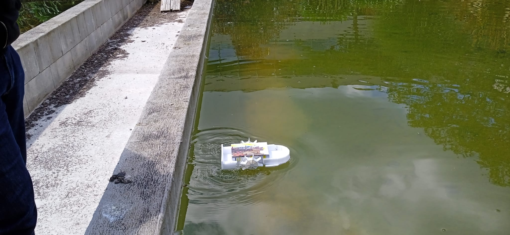
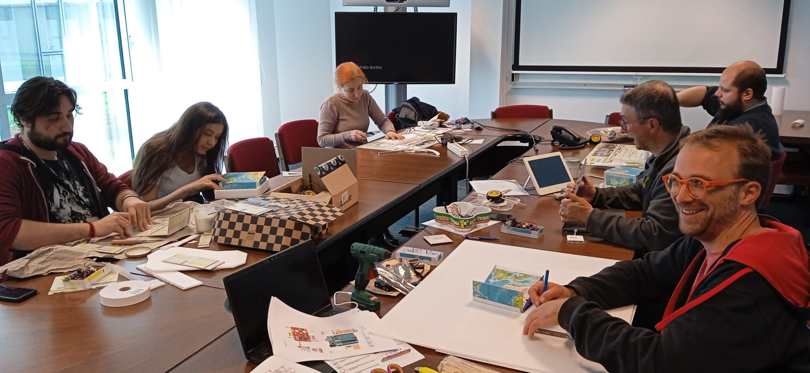
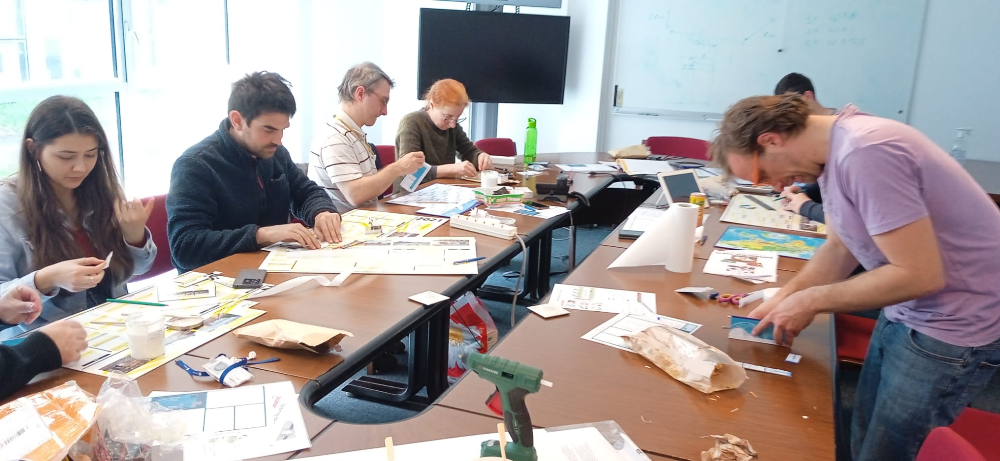
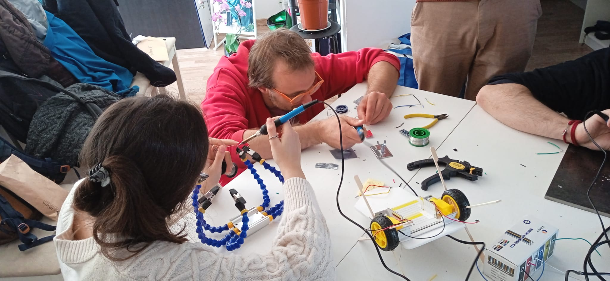
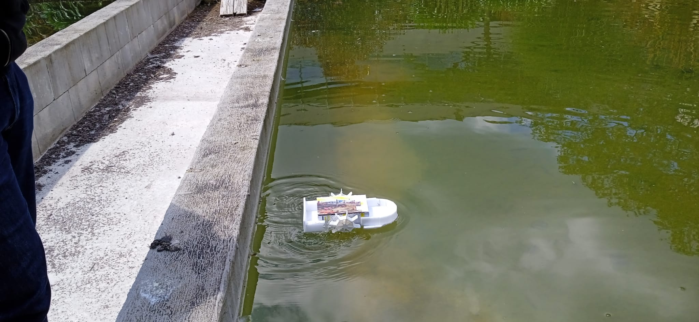
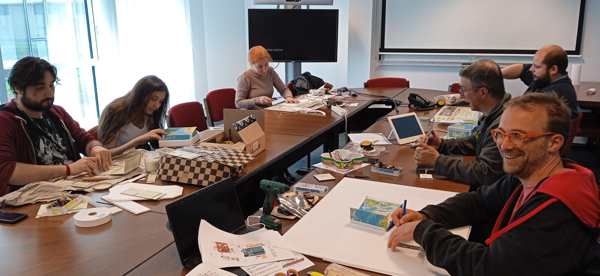
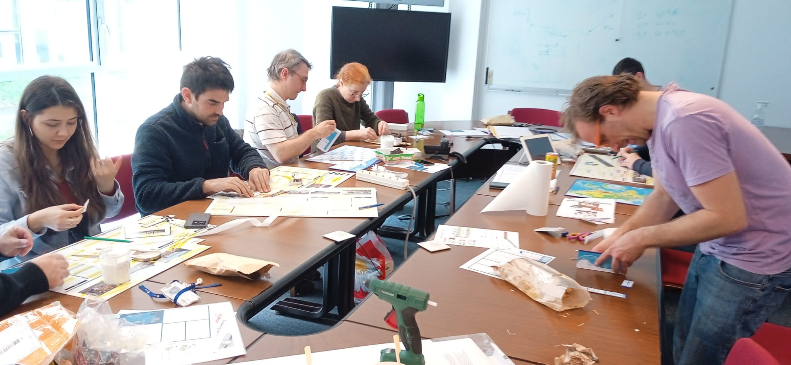
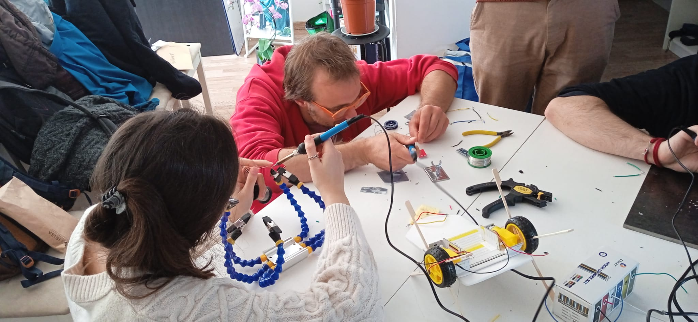

After the workshop on building a small Arduino robot, we move on to a more technical project: a workshop on building a remote-controlled boat with Arduino!
The objectives of this project were to have fun building a remote-controlled boat and discover electronics. The project was divided into two main parts: the remote control and the boat, and into three functionalities: the joystick (on the remote control), the radio (on the remote control and the boat), and the H-bridge (on the boat). We divided this project into 3 design stages: 1.The electronics of the remote control, 2.The electronics of the boat, and 3.The mechanics of the boat (hull, motor mounts, paddle wheels).
The entire project is described in detail in the following PDF file, though it is in French.
The final result:


 






